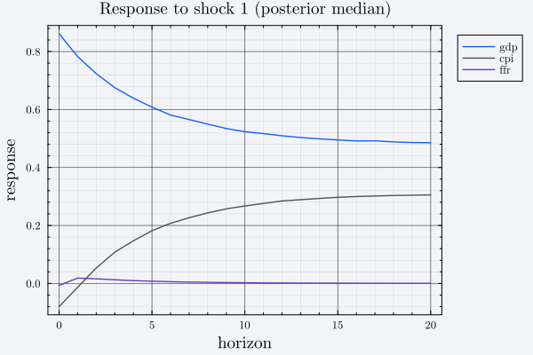

BVAR.jl
Bayesian Vector Autoregressions in Julia
BVAR.jl provides an end-to-end framework for Vector Autoregressive (VAR) and Bayesian Vector Autoregressive (BVAR) modeling. You bring a standard DataFrame and proceed sequentially through every stage of time-series modeling:
- Unit root & cointegration testing —
adf_tests,johansen_trace_test - Lag selection —
aic,bic,hq,fpe - Frequentist VAR estimation —
estimate_var, by stacked OLS or equation-by-equation fixed-effect models - Bayesian VAR estimation —
build_priorandsample_posterior, across nine prior families - Structural identification & impulse responses —
identify_short_run,identify_sign_restrictions,sample_structural,impulse_response
Installation
BVAR.jl is not registered in the General registry, so install it by URL:
using Pkg
Pkg.add(url = "https://github.com/joshsack1/BVAR.jl")Or, to hack on it:
using Pkg
Pkg.develop(url = "https://github.com/joshsack1/BVAR.jl")Julia 1.12 or later is required.
A single flat namespace
Despite the subdirectory layout of src/, BVAR defines no submodules. Every name — exported or not — lives directly in BVAR. Unexported helpers are reached as BVAR.get_endogenous, and they are documented in the "Internals" section of each API Reference page.
The five-stage pipeline
Each stage consumes the object the previous stage returned. The chain is:
DataFrame + Vector{Symbol}
│
├─▶ adf_tests / johansen_trace_test (stage 1, diagnostic only)
├─▶ aic / bic / hq / fpe ← VARresult (stage 2, diagnostic only)
│
▼ estimate_var
VARestimate
│
▼ build_prior
MinnesotaPrior | NormalWishartPrior | IndependentNIWPrior
AsymmetricConjugatePrior | BaumeisterHamiltonPrior (all <: AbstractVARPrior)
│
▼ sample_posterior
BVARdraws ──────────────┬──▶ identify_short_run ─┐
│ └──▶ identify_sign_restrictions ─┤
▼ hamilton_structural_prior + sample_structural │
StructuralDraws ──────────────▶ impulse_response ─┤
▼
IRFdrawsStages 1 and 2 are diagnostic: nothing downstream consumes their output, so you can skip them if you already know your lag order and integration orders.
Contracts worth knowing before you start
These are the places where a mistake is silent rather than loud.
build_priorre-derives statistics fromdfthat aVARestimatedoes not carry. It needs the univariate AR residual variances and the sample means, so it takesdfandend_vecalongsideest. All three must describe the same data:end_vecmust equalest.namesin the same order, anddfmust have the same number of rows as the dataestwas fit on. Otherwise the two sources of statistics are mismatched.Coefficient matrices are stored
k × n, variables in columns. The row order is: the constant first (ifinclude_constant), then lag 1 of every variable, then lag 2 of every variable, and so on — sok == include_constant + lags * vars. This single convention is shared byVARestimate.β_hat,BVARdraws.β, and the structuralB, andlag_blocksis what converts it into the $\Phi_1,\ldots,\Phi_p$ matrices of the textbook column-vector form. Slicing those rows by hand is the easiest way to get a wrong answer that still runs.sample_posterioris one entry point over two very different mechanisms. Which you get is determined entirely by the prior type you hand it — see 4b. Posterior Sampling.ndrawsdoes not always mean the same thing. For the conjugate families it is a count of independent draws from the exact posterior; forIndependentNIWPriorit is a count of Gibbs sweeps, which are autocorrelated.Some helpers the README-style workflow needs are not exported.
BVAR.get_endogenousandBVAR.generate_VARresultmust be qualified.
Quickstart
using BVAR
using DataFrames
using Random
Random.seed!(123)
df = DataFrame(
gdp = cumsum(0.5 .+ randn(150)), # I(1) output
cpi = cumsum(0.2 .+ randn(150)), # I(1) price level
ffr = 2.0 .+ 0.5 .* randn(150), # policy rate
)
end_vars = [:gdp, :cpi, :ffr]
# Stage 3: reduced-form VAR(2)
est = estimate_var(df, end_vars, 2; include_constant = true, method = :ols)
# Stage 4: conjugate Normal-Wishart prior, then i.i.d. draws from the exact posterior
prior = build_prior(df, end_vars, est, :normal_wishart)
draws = sample_posterior(prior, est; ndraws = 500)
# Stage 5: recursive (Cholesky) identification
irf = identify_short_run(draws; horizon = 20)
(est.obs, est.lags, est.vars, length(draws.β), irf.horizon)(148, 2, 3, 500, 20)And the resulting impulse responses:
using Plots, Statistics
med(i, j) = [median(d[h + 1][i, j] for d in irf.H) for h in 0:irf.horizon]
plot(
0:irf.horizon,
[med(1, 1) med(2, 1) med(3, 1)];
label = ["gdp" "cpi" "ffr"],
xlabel = "horizon",
ylabel = "response",
title = "Response to shock 1 (posterior median)",
)
Where to go next
- The Guide walks each stage in order. Start with 1-2. Pre-Estimation and read The five-stage pipeline for the objects that cross stage boundaries and the contracts between them — that section is the one most worth reading before you write any code.
- The API Reference is generated from the docstrings, split by stage, with exported names first and internal helpers below.
- The Bibliography collects the papers the docstrings cite.
- How This Package Was Built discloses how much of this package was drafted by a language model, what verification stands behind it, and what you should check yourself before using it in published work.